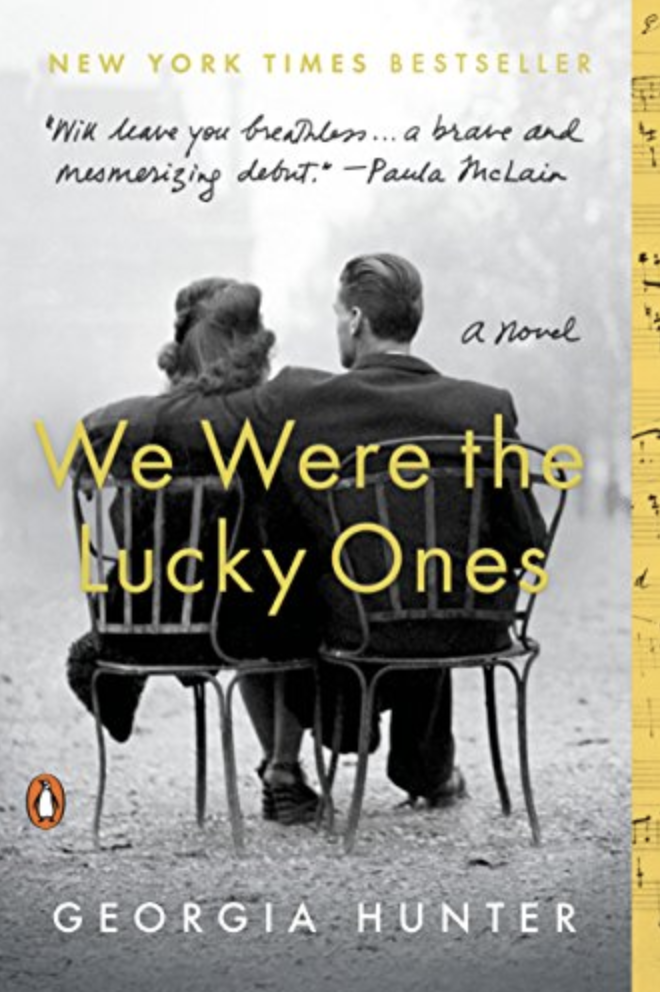
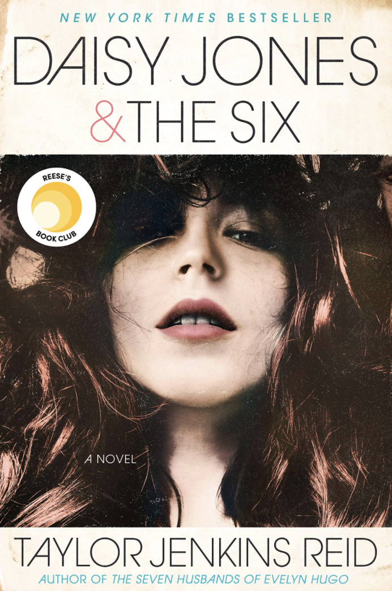
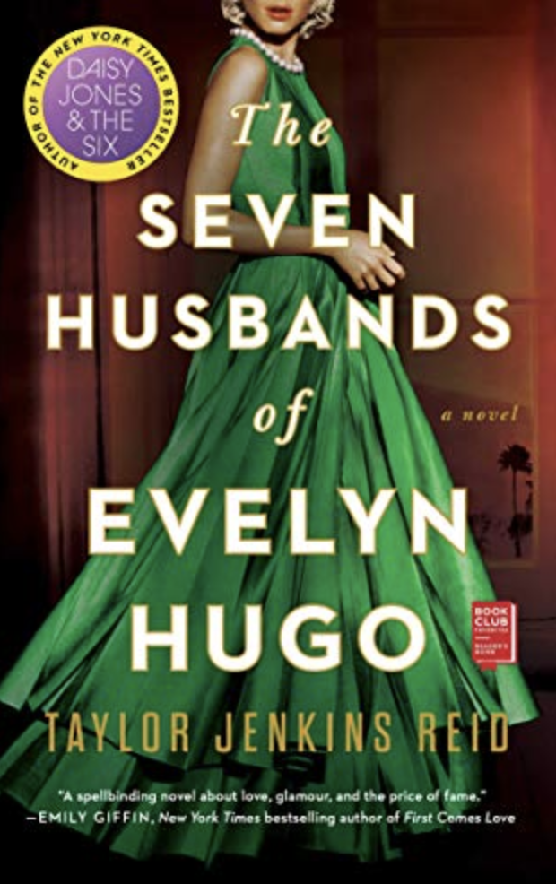

Reading books
I love reading books for fun, especially when I have time. I have loved reading books from a young age, because it allows me to be trasported to another world. Though my taste in book genres has evolved since then (thank God), my love for books has not dwindled, and I hope it never does. I don't get to read for fun as much as I would like because I have to read so much for school, but when I do I am always grateful. I even do book reviews on my Instagram stories and keep them in a highlight on my page, which started out as a hobby for myself. However, since I have started doing that, several people have messaged me saying that they use my reccomendations, which is so cool! I am glad that my reccomendations are guiding people in their book buying experience.
My favorite book of all time would have to be a tie between Daisy Jones and the Six and We Were the Lucky Ones, I am a huge nerd for some historical fiction. My favorite author would have to be Taylor Jenkins Reid, who wrote Daisy Jones and the Six and The Seven Husbands of Evelyn Hugo, two amazing historical fiction pieces where I always think that the main character is a real person, to the point where I have to look it up and make sure.
  Other book genres I enjoy:
- Memoirs
- General fiction
- Nonfiction
If I got to live my dream life and money weren't an option, I would definitely own a bookstore in downtown Manhattan and get to spend my days reading, writing, and talking about books with people. And I would get to meet new people!